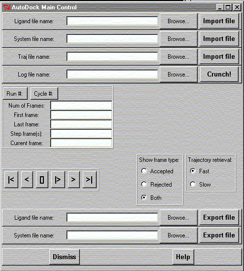

This is the main widget for the AutoDock trajectory display and analysis facility.
There are first 4 file readers:
With an AutoDock trajectory I mean the "ligand.tout" file as in the following:
The traj command which is used in the trajectory output, creates trajectories in two formats, one in PDB format which is written to the log file specified by the -l flag, and one in a raw ASCII format which is written to the standard output. For example, if the command issued was:
autodock -p ligand.dpf -l ligand.trj.conv.log -c < trj.conv.com > ligand.tout
the file ligand.trj.conv.log will contain a PDB formatted list of all the trajectory steps, while the ligand.tout file will contain raw ASCII data, with one row for each atom in the ligand, and each column containing data. The command file trj.conv.com contains only the commands:
traj ligand.trj
stop
This was taken from Web pages and manuals at:
http://www.scripps.edu/pub/olson-web/doc/autodock/
gOpenMol is again calling this .tout file a .trj file but it should not be mixed with the original .trj file. A bit confusing I agree! To read and display a trajectory from the AutoDock do the following:
After this you should be able to see the number of frames displayed.
By default the display goes from the first frame to the last with the step 1. This can be changed by supplying new values in the respective fields.
It is possible to display the trajectory in a loop, one frame at the the backwards and forwards or go to the first and last frames.
Frame control:
There are two trajectory retrieval methods available:
At the bottom of the widget there is also a file writer to write out the ligand and system coordinates as *.pdbq files. This is very handy in case you import the atom partial charges and want to write a *.pdbq file with the new charges.

**************************************************************************
LUL/2001
**************************************************************************